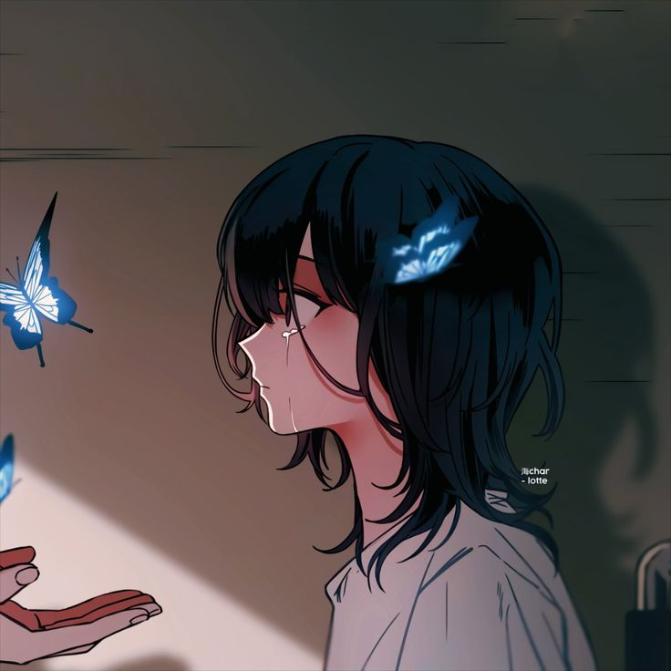

Butterfly Girl
"The Offering" by @char-lotte.
This image lives in that quiet space between a breakdown and a breath. It’s not loud. It doesn’t beg for attention.
It earns it.
1. Composition & Framing: The Space Between Two Hands*
The artist crops us tight, right at shoulder level. We’re not given the full room, just this sliver of wall, shadow,
and light. That claustrophobia is intentional. It puts us _in_ the moment with her.
Notice the triangulation: Her face → The butterfly → The outstretched hand.
Your eye can’t rest. It cycles between them, just like she probably is. The hand is open, palm up. It’s the
universal gesture of “I’m here. You’re safe.” But she hasn’t moved toward it yet. That tension is the whole story.
Her profile creates distance. We see her, but we’re not _with_ her. We’re witnesses.
2. Light as Character-
This isn’t flat anime shading. The light is a character here.
It slices in diagonally, warm and dusty, like late afternoon sun through blinds. It picks out the tear on her cheek,
the edge of her collar, and most importantly, the wings of the butterflies.
Everything else is swallowed by cool, desaturated shadow. That shadow behind her head feels heavy. Like grief, or
memory. The contrast makes the scene feel cinematic. If this were a film still, the light would be the score.
3. Color & Symbolism: The Blue Butterflies-
The palette is muted browns, grays, and skin tones. It’s tired. Then you get hit with that glowing cyan-blue.
In art, butterflies are loaded: transformation, the soul, lost loved ones, messages from somewhere else. Here we
have 3.
- One landed in her hair. Already part of her. A thought she can’t shake.
- One in flight, leading toward the hand. A guide.
- One half-seen, already on the hand. An invitation already accepted by someone else.
They’re the only things emitting light. So visually and thematically, they are hope. Fragile, luminous, and easy to
scare away. The fact they’re glowing makes this feel slightly magical-realist. This isn’t just sadness. This is
sadness with a touch of the supernatural.
4. Rendering & Style-
@char-lotte uses clean, confident linework with selective detail. Her hair has volume and strands that catch the
light, but the background is suggested with just a few speed lines. That keeps focus on her.
The skin rendering is soft, with a faint blush and the tear rendered as a single, bright highlight. No
over-rendering. It’s economical, and that restraint makes the emotion land harder. If she were sobbing, we’d feel
pity. Because she’s just _holding it in_, we feel empathy.
5. The Emotional Core-
What makes this work is what’s _not_ shown. We don’t see who the hand belongs to. We don’t know what happened. We
only get this 3-second moment of decision.
It reads as:
"After everything, someone is still reaching for me. Do I believe it?"
The butterfly is the bridge between them.
It’s melancholy, but not hopeless. The light is already in the room. The hand is already out. The only question is
if she’ll take it.
Final Thought
This is contemporary emotional illustration at its best. It borrows from webtoon and anime aesthetics, but uses them
in service of mood, not just fandom. It’s intimate, symbolic, and beautifully lit.
It doesn’t tell you a story. It makes you _feel_ one, and then lets you fill in the rest.
Rating: 9/10 for atmosphere and emotional economy